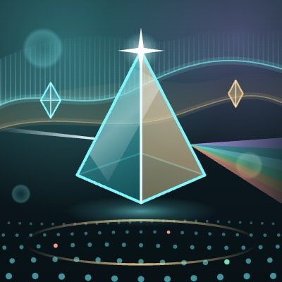
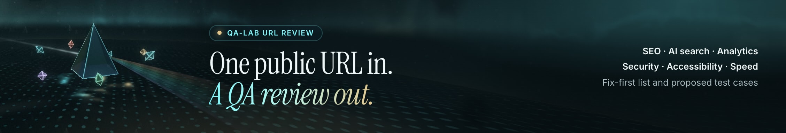
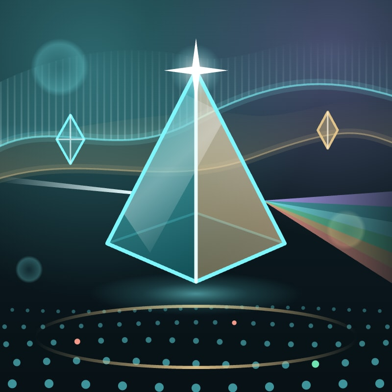
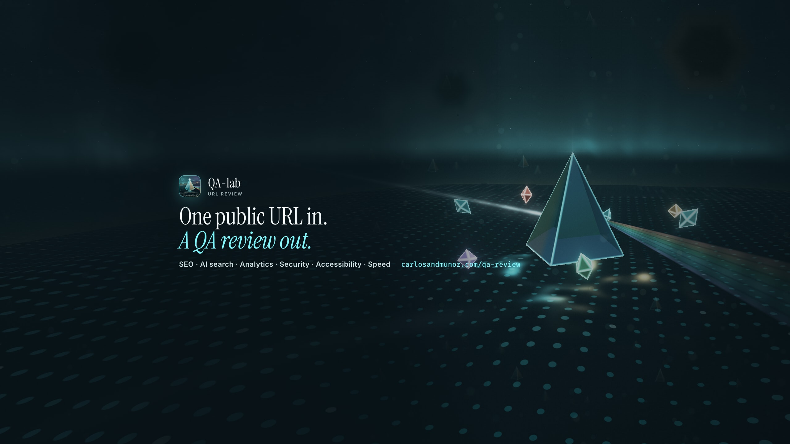

Fusion look, brand-kit-2026-10. Rings show the circle crop; dashed boxes the area every screen shows. Built by scripts/brand-kit/build.js; nothing is uploaded.
X

Profile photo400×400 · x/avatar-400.jpgHeader photo; the profile photo covers the lower left1500×500 · x/header-1500x500.jpg
LinkedIn
Page logo400×400 · linkedin/logo-400.png

Page cover (Edit page > Header); the logo covers the lower left2256×382 · linkedin/cover-1128x191@2x.jpg
YouTube

Channel picture800×800 · youtube/avatar-800.jpg

Banner image; phones show only the outlined middle2560×1440 · youtube/banner-2560x1440.jpgVideo watermark (Customization > Branding)150×150 · youtube/watermark-150.png